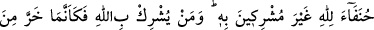
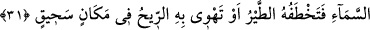
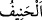
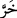
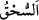

yerine getirmezse işte o söz “yalan söz” cümlesindendir.
Sıdk yolunu, gönlü saf sudan öğren
Özgürlüğü de doğrulukla çemen servisinden iste
Vefa gösterelim, halkın kınamasını hoş görelim, hoş olalım
Çünkü yolumuzda incinmek nankörlüktür
31. Kendisine ortak koşmaksızın Allah’ın hanifleri (O’nun birliğini tanıyan
müminler olun). Kim Allah’a ortak koşarsa sanki o, gökten düşüp parçalanmış da
kendisini kuşlar kapmış, yahut rüzgâr onu uzak bir yere sürüklemiş (bir nesne)
gibidir.
“Kendisine” hiçbir şeyi “ortak koşmaksızın” -ki putlar öncelikle bu şeylere dâhildir-
“Allah’ın hanifleri” O’nun birliğini tanıyan mü’minler olun. Yani her bâtıl dinden
vazgeçip dîni O’na has kılarak hak dine meylederek/yönelerek pislikten, putlardan
sakının.
“ dalâletten istikamete yönelmektir. “ istikamete yönelen kimse demektir.
“Kim Allah’a ortak koşarsa sanki o, gökten düşüp parçalanmış da kendisini kuşlar
kapmış, yahut rüzgâr onu uzak bir yere sürüklemiş (bir nesne) gibidir.”
Râğıb der ki: “” fiilinin mânâsı, sesi işitilecek şekilde düştü demektir. Bu ses su,
rüzgâr ve bunlardan başka yüksekten düşen bir şeyin çıkardığı sestir.
“ hızlıca kapmak/çalmak demektir. Muzâri siygasıyla gelmesi, dinleyenlere
müşrikin cür’et ettiği bu korkunç durumu tasvir etmek içindir. Kâşifî der ki: “Kim Allah
Teâlâ’ya şirk koşarsa, o kimse, gökten yeryüzüne düşüp helâk olmuş kişiye benzer. Leş
yiyen kuşlar gelip yerden onu kaparlar, organlarını parça parça ederler.”
“ uzaklık demektir. İshâk ismi bu kökten değildir. Çünkü o mânâsı çok gülen
demek olan İbrânîce bir kelimedir. Kâşifî der ki: “Yahut rüzgâr onu yüksek bir yerden
alıp uzak bir yere fırlatır. Kimse onun feryâdına erişmez, elinden tutmaz. Bu kelimeler,
teşbîhât-ı mürekkebedendir. Yani, kim îmân burcundan küfür çukuruna düşerse, nefsinin
hevâsı onu perişan eder. Veyâhud şeytan vesvesesinin rüzgârı onu dalâlet vadisine
düşürür, yok eder. Sözün özü şudur: Müşriklerin akıbeti helâktir.” Kurtuluş îmanda
olduğu gibi helâk de şirktedir.
Sahîhayn (Buhârî ve Müslim)’de Muaz b. Cebel (r.a.)’den rivâyet edildiğine göre
Hz. Peygamber (a.s.) kendisine: “Allah’ın hakkı nedir bilir misin?” buyurdu. Muâz
(r.a) der ki: “Allah ve Rasûlü daha iyi bilir.” dedim. Bunun üzerine Rasûlullah (s.a.):